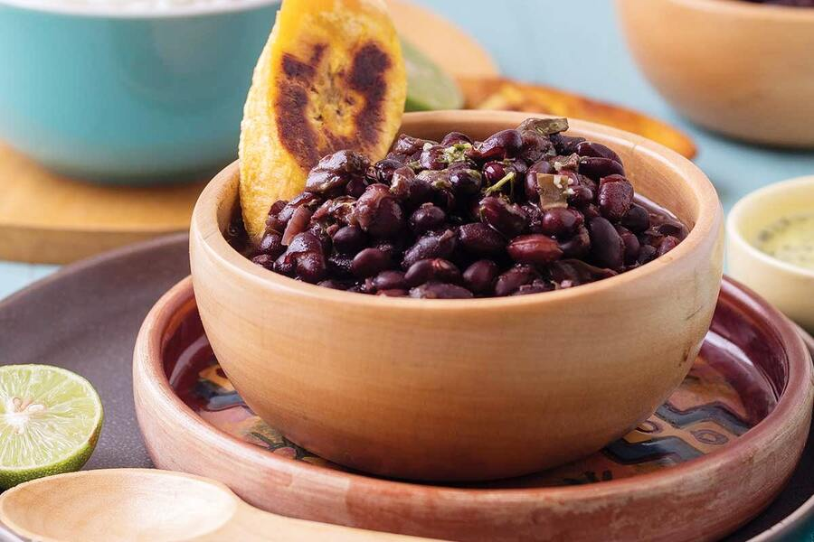

Traditional Black Beans

About this dish
Intro paragraph: what is it, when it comes from, when it's eaten.
Ingredients
- TODO
- TODO
- TODO
Preparation
- First step.
- Second step.
- Thrid step.

Intro paragraph: what is it, when it comes from, when it's eaten.